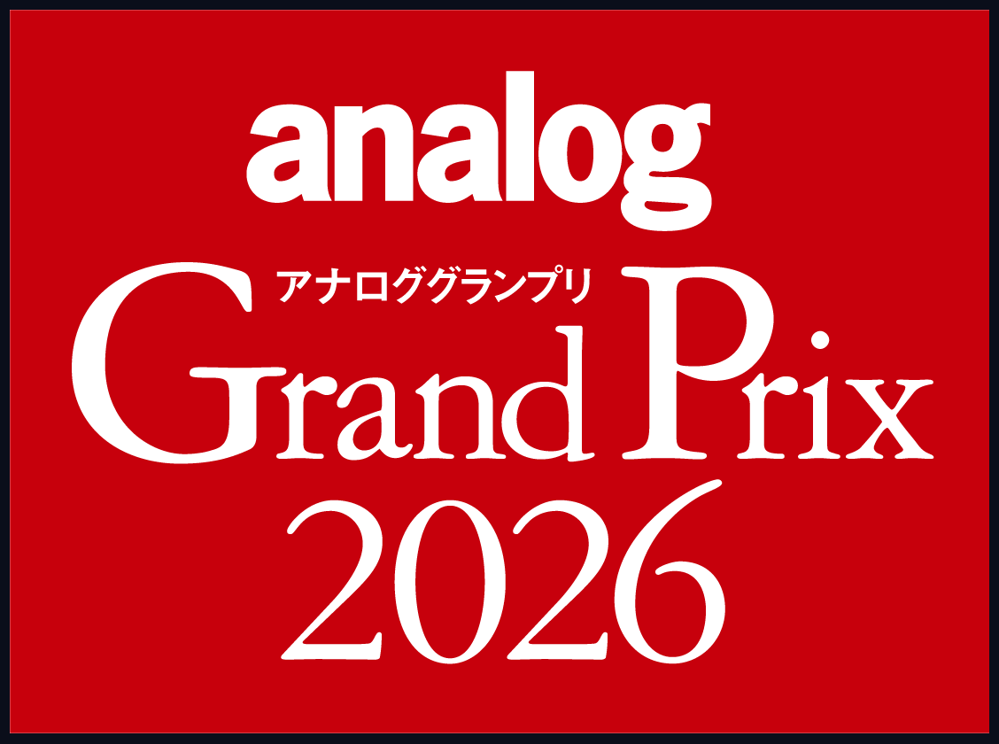
ANALOG GRAND PRIX 2026
ABOUT
アナロググランプリは、アナログオーディオ製品の中から最も優れた製品を選出するアワードです。各メーカーおよび輸入商社からエントリーされたモデルから、今年も「アナログ感覚が感じられ、本誌読者に推薦するにふさわしいアナログ再生に欠かせない機器」を投票により選出いたしました。4名のオーディオ評論家と全国の投票販売店による厳正な投票・審査を経て、各カテゴリーの頂点に立つ製品が選ばれます。
AWARD WINNERS
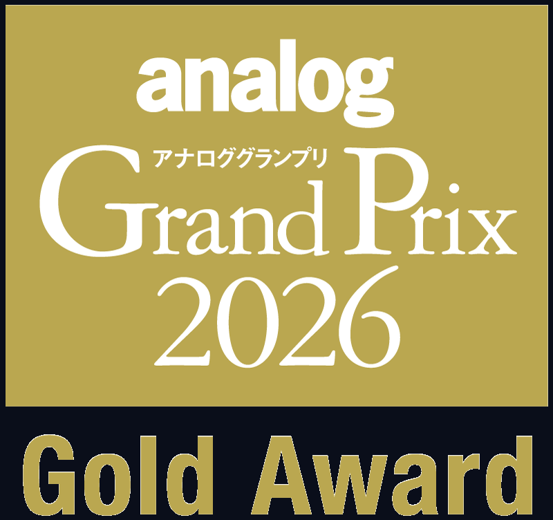
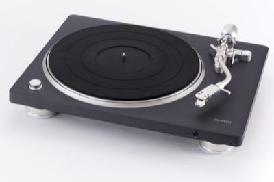
DENON
¥138,600
ディーアンドエムホールディングス
老舗ブランドのエントリークラスのプレーヤー。内周歪みでのエラーを抑える独自の「トラッキングエラー・カーブ」思想に基づいて開発されたS字型トーンアームを搭載。MMカートリッジが付属し、フォノイコライザー内蔵。オートリフトアップ＆ストップ機能やBluetooth対応など、多機能で価格を抑えた製品企画が評価された。
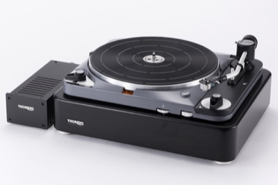
THORENS
¥1,980,000
PDN
奇跡的な復活を遂げた名門ブランドの顔とも言える往年の銘機「TD124」が、最新技術で蘇った。細部を忠実に再現しつつ、モーターやプラッターなどに最新技術を投入し、高精度なダイレクトドライブ方式を採用したモデル。ダイナミック・バランス型のトーンアームや外部リニア電源も新規開発。伝統と最新技術の融合が高い評価を集めた。
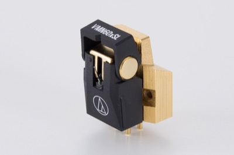
Audio-Technica
¥96,800
オーディオテクニカ
「AT-VMxシリーズ」が9年ぶりにモデルチェンジ。ラインアップの充実度もさることながら、トップモデルである本機の完成度の高さが高く評価された。コイル導体にPCUHD（高純度無酸素銅）を採用し、シリーズ内で交換針に互換性があるのが大きな特徴。本機では特殊ラインコンタクト針とボロン・カンチレバーが用いられている。
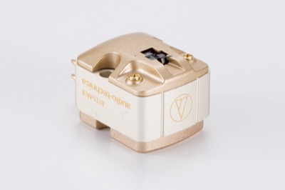
Audio-Technica
¥126,500
オーディオテクニカ
3種の素材を組み合わせたハイブリッドボディを採用した「AT33xシリーズ」は、職人の手作業で仕上げられる日本生産のMC型カートリッジ。トップモデルである本機は、無垢マイクロリニア針とボロン無垢テーパーカンチレバーを搭載。オーディオテクニカのMC型最上位機としての完成度の高さが、高い評価を集めた。
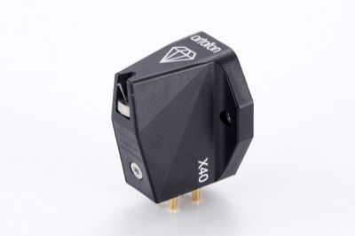
ortofon
¥179,300
オルトフォンジャパン
ベストセラーである「MCシリーズ」がモデルチェンジ。従来の「10」「20」「30」に加え、今回追加された「40」が付けられたシリーズのトップモデルが本機。高純度銀線コイル、ハニカム天面のステンレス製フレームなどはシリーズ共通。本機は、無垢シバタ針とボロン製カンチレバーが用いられている。トップ機ならではの高い完成度が評価された。
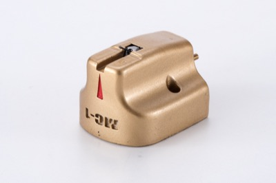
ACOUSTIC REVIVE
¥1,628,000
関口機械販売
人気アクセサリーブランド初のMC型カートリッジ。コイル巻き線には導通率の高い銀と銅のハイブリッド鍛造導体PC-Triple C/EXを採用。ボディは天然鉱石を含侵させた特殊樹脂素材を３Dプリンターで精密に形状加工している。発電機構は新開発のVXシステム。投入されている技術や素材の独自性が高く評価された。
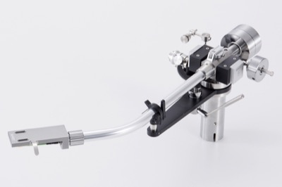
SAEC
¥825,000
サエクコマース
新規開発のダブルナイフエッジ機構を採用したトーンアーム。ナイフの直径を大きくし、刃受けの構造も改良することで、さらなる高感度と剛性を実現。インサイドフォース・キャンセラー機構は振動対策のため、新しい機構を採用。内部配線材はPC-Triple C。新世代のアナログ再生に挑むトーンアームとして評価を集めた。
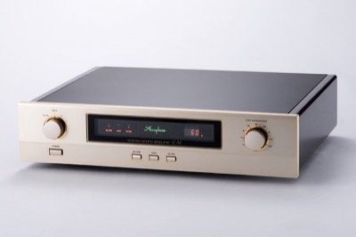
ACCUPHASE
¥825,000
アキュフェーズ
人気モデルC-47の後継機であり、最新の回路・高音質素子を採用したフルモデルチェンジ機。入力インピーダンス切り替えスイッチが大型化され、左右対称のパネルデザインになっているのが外観上の大きな変更点。入力インピーダンスには新たに60Ωが追加された。レファレンス機としての高い安定度が評価ポイントである。
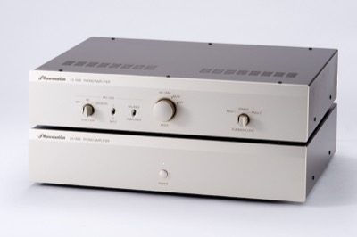
Phasemation
¥2,640,000
協同電子エンジニアリング
6筐体構成のフォノイコライザーアンプEA-2000とMC昇圧トランスのT-2000の2つのフラッグシップ機に投入された技術を、管球式の電源部とアンプ部の２筐体に集約したのが本機。上級機の技術を引き継ぐとともに、光電型カートリッジへの対応という新機軸も導入し、成果をあげていることが高い評価を集めた。
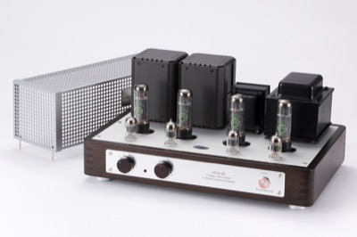
Aurorasound
¥946,000
オーロラサウンド
独創的かつ高品位な製品づくりで知られるブランドの、初の全段真空管構成のプリメインアンプ。オーソドックスな構成ながら、ルンダール社製出力トランスほか厳選パーツを、高いノウハウで配置・配線。RCAライン入力4系統の基本装備に加え、オプションでフォノ入力やXLR接続も可能な柔軟性を備えており、新時代の要求に対応できるモデルである。
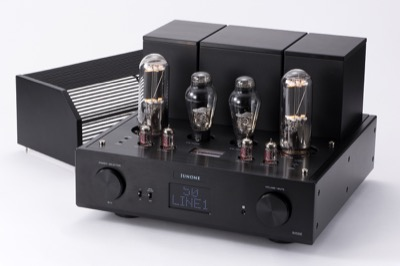
JUNONE
¥1,485,000
トライオード
前段に12AU7、ドライブ段にPSVANE WE300B、出力段に845を搭載した全段三極管構成。大型トロイダルトランスやSiCショットキーバリアダイオードの採用により、高出力を安定して確保できる強力な電源部を搭載。大型ディスプレイによりボリューム位置や入力切り替えの視認性も向上。製品としての高いクオリティが評価された。
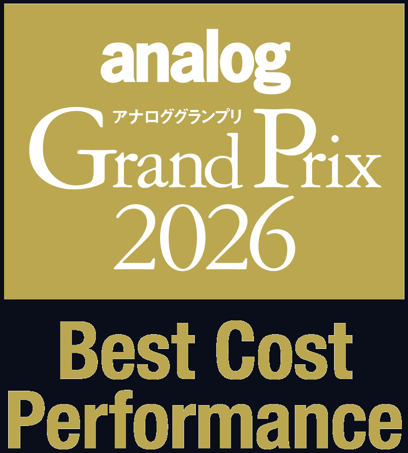
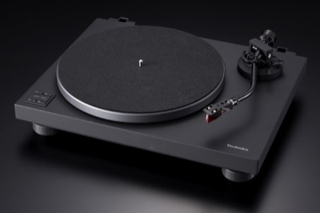
Technics
¥OPEN（想定売価99,000円前後）
パナソニック
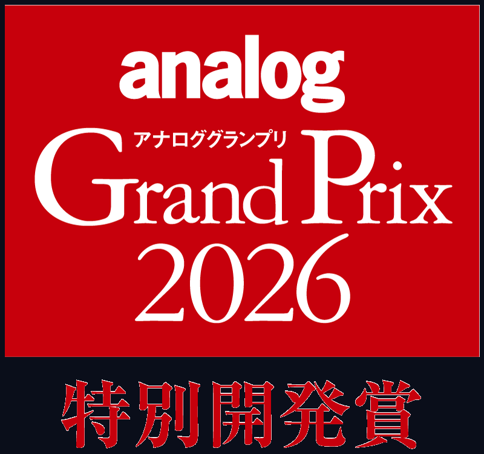
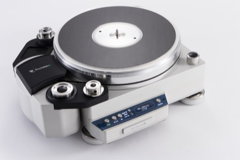
TechDAS
¥2,750,000
ステラ
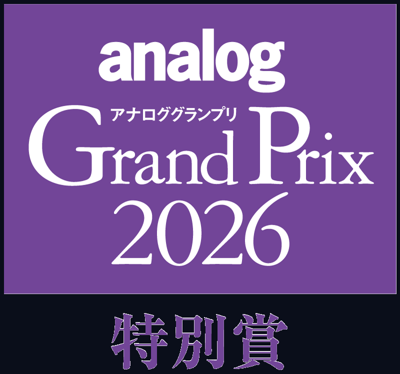
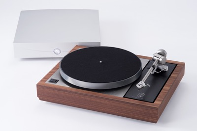
LINN
¥10,032,000
リンジャパン
Audio-Technica
¥88,000 / ¥55,000
オーディオテクニカ
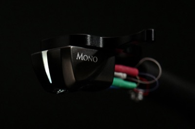
DS Audio
¥137,000〜¥2,200,000
デジタルストリーム
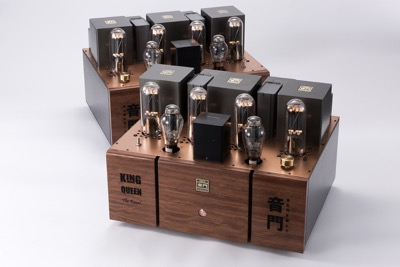
OTOMON
¥4,950,000
音門ラボ
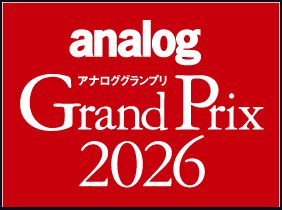
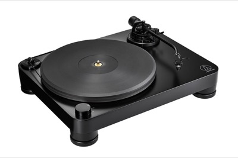
Audio-Technica
¥OPEN（想定売価132,000円前後）
オーディオテクニカ
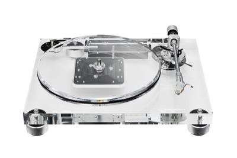
Audio-Technica
¥OPEN（想定売価330,000円前後）
オーディオテクニカ
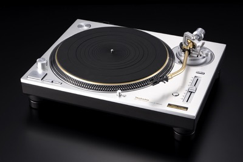
Technics
¥OPEN（想定売価599,940円前後）
パナソニック
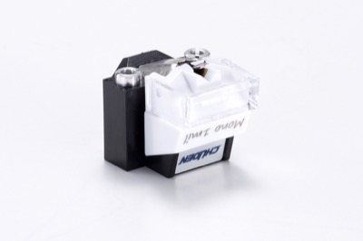
CHUDEN
¥19,030
中電
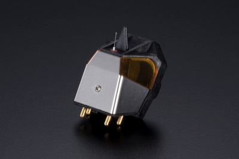
REGA
¥152,900
完実電気
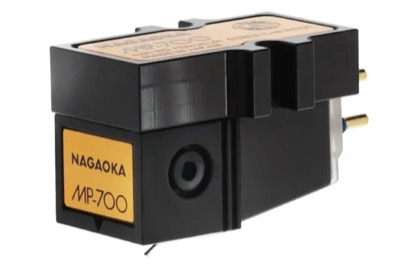
NAGAOKA
¥203,500
ナガオカトレーディング
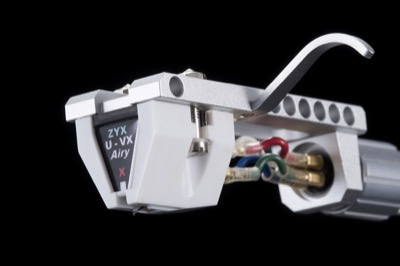
ZYX
¥393,000〜¥415,000
ヒノ・エンタープライズ
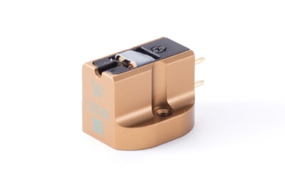
MUTECH
¥638,000
カジハラ・ラボ
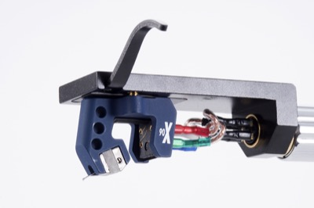
ortofon
¥880,000
オルトフォンジャパン
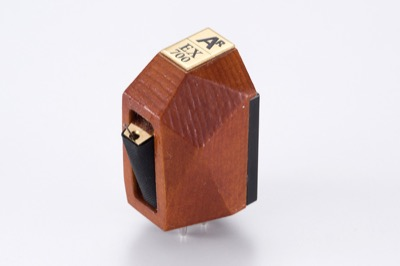
ANALOG RELAX
¥979,000
ズートコミュニケーション
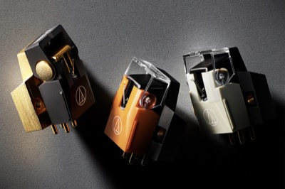
Audio-Technica
¥15,400〜¥96,800
オーディオテクニカ
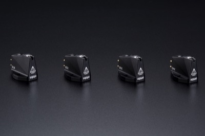
ortofon
¥53,900〜¥179,300
オルトフォンジャパン
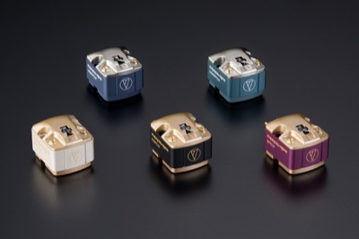
Audio-Technica
¥55,000〜¥126,500
オーディオテクニカ
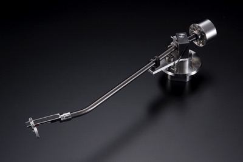
GLANZLAB
¥4,400,000
GLANZLAB
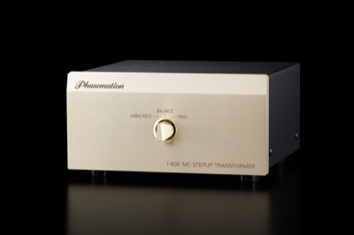
Phasemation
¥165,000
協同電子エンジニアリング
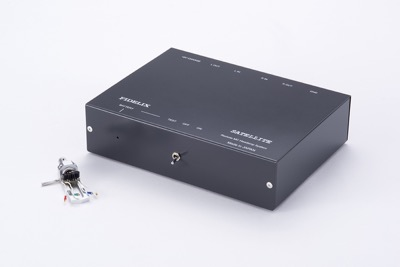
Fidelix
¥165,000
フィデリックス
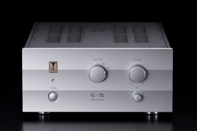
Audio Note
¥3,641,000
オーディオ・ノート
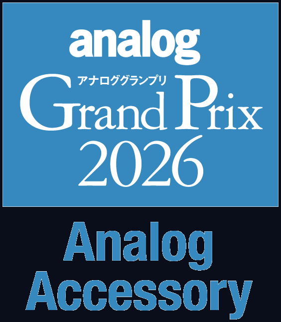
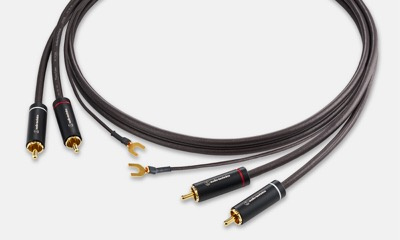
Audio-Technica
¥OPEN（想定売価16,500円前後）
オーディオテクニカ
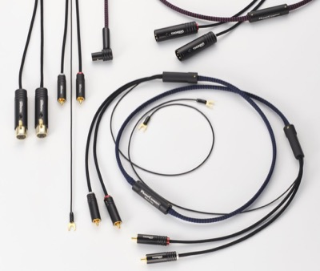
THORENS
¥88,000〜¥143,000
PDN
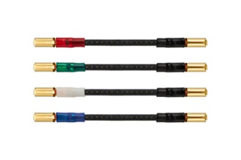
Audio-Technica
¥OPEN（想定売価11,000円前後）
オーディオテクニカ
TOP WING
¥13,200
トップウイング
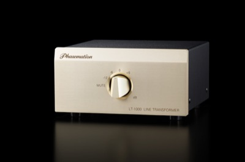
Phasemation
¥220,000
協同電子エンジニアリング
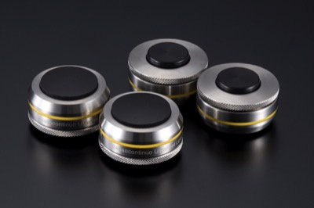
Bassocontinuo
¥79,200
ノア
CATEGORIES
ターンテーブル／アナログプレーヤー
フォノカートリッジ
トーンアーム
フォノイコライザーアンプ／昇圧トランス
真空管アンプ
アナログアクセサリー
JURY
審査委員長
VOTING RETAILERS
CAVIN大阪屋
北海道
仙台のだや
宮城県
のだや仙台店
宮城県
MUSiCA
福島県
サウンドハイツ
千葉県
オーディオユニオンお茶の水アクセサリー館
東京都
テレオ
東京都
ホーム商会
東京都
サウンドクリエイト
東京都
クサカベ電機
東京都
オーディオスクエア
神奈川県
でんき堂スクェア湘南
神奈川県
チャレンジャー音響
群馬県
オーディオコア
長野県
ロイヤルオーディオ
長野県
クリアーサウンドイマイ
富山県
ノムラ無線
愛知県
ジョーシンWEB
大阪府
シマムセン
大阪府
エディオン広島本店
広島県
アートクルー
福岡県
マックスオーディオ
福岡県
吉田苑
福岡県
HISTORY
analog 22号 アナロググランプリ2009
「analog」誌がキーワードとする"アナログ感覚"が感じられ、本誌の読者に推薦するにふさわしいアナログ再生に欠かせないオーディオ機器」を選定することを目的に、第1回アナロググランプリが開催される。選定対象ジャンルは、デジタル機器を除いた現行オーディオ機器。
analog 34号 アナロググランプリ2012
スピーカーシステムを選考の対象外とし、アクセサリー部門を新設。アナログ再生環境の周辺機器にも光を当てる体制が整う。
analog 38号 アナロググランプリ2013
アナログオーディオに造詣の深いオーディオ専門店が、投票というかたちで参加。アンプについては、真空管アンプとフォノ入力に対応したソリッドステートアンプを選定対象とする。
analog 59号 アナロググランプリ2018
これまでの年末号から、春号での開催となった。「音楽ファンの皆様にとっての宝物のような存在となり得る製品」と「最先端のテクノロジーで従来では体験できなかったような、アナログ再生の新たな価値を切り拓く製品」の２点を新たに選定基準に追加。これに伴い、選定対象ジャンルにスピーカーシステムを戻し、アナログアクセサリーを対象外とした。
analog 67号 アナロググランプリ2020
これまでの選定基準に加え、高級機偏重になるのを避けるべく、現実的な価格も従来以上に考慮しての選定とする。角田郁雄氏が審査委員長に就任。スピーカーシステムを選定対象ジャンルから除外。
analog 75号 アナロググランプリ2022
アナログ機器には息の長いロングランモデルが多いことから、この回のみロングラン賞を設置。長期に渡ってアナログ再生を支えてきた6モデルが選出された。
analog 83号 アナロググランプリ2024
新たに「ベスト・コストパフォーマンス賞」を設け、リーズナブルな価格の優秀モデルを選出することとした。
analog 87号 アナロググランプリ2026
アナログ周辺アクセサリーの優秀モデルを選出するため新たに、「アナログアクセサリー賞」を設けた。
{kind=link}
{kind=link}
{kind=link}
{kind=link}
{kind=link}
{kind=link}
{kind=link}
{kind=link}
{kind=link}
{kind=link}
{kind=link}
{kind=link}
{kind=link}
{kind=link}
{kind=link}
{kind=link}
{kind=link}
{kind=link}
{kind=link}
{kind=link}
{kind=link}
{kind=link}
{kind=link}
{kind=link}
{kind=link}
{kind=link}
{kind=link}
{kind=link}
{kind=link}
{kind=link}
{kind=link}
{kind=link}
{kind=link}
{kind=link}
{kind=link}
{kind=link}
{kind=link}
{kind=link}
{kind=link}
{kind=link}
{kind=link}
{kind=link}